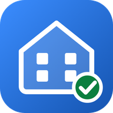
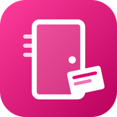
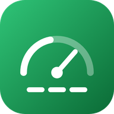
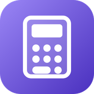

Außendienst-Apps
Jede App einmal öffnen und installieren – dann liegt sie mit eigenem Symbol auf dem Startbildschirm.

Bulk-ZentraleBulk-Einsätze Tür für Tür: Wohnungen, Nicht da, Später, Angetroffen.
NachvermarktungDein Gebiet: Flyern, Nochmal hin, Kundentermine, Wochenplan.
Außendienst-CockpitAlles auf einen Blick: beide Sicherungen, Termine, Zahlen, Notizen.
WechselrechnerWas zahlt der Kunde über 24 Monate, wenn er wechselt – mit Aktion und Gutschriften.- App antippen
- Chrome-Menü ⋮ → „App installieren“ (oder „Zum Startbildschirm hinzufügen“)
- Ab dann nur noch über das Symbol öffnen